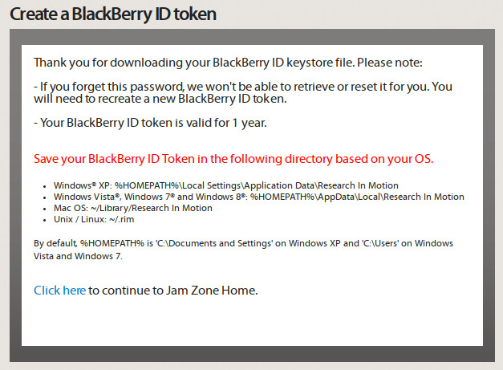

Steward
分享是一種喜悅、更是一種幸福
手機 - Blackberry Passport - 如何Sign Bar檔案
目前Blackberry已經關閉簽章的伺服器，因此，司徒這邊只是留個紀錄
1. https://developer.blackberry.com/codesigning
2. 把申請到的Blackberry ID Token放到指定的目錄下

3. 使用如下指令產生Token：
$ source ~/bbndk/bbndk-env_10_3_1_995.sh $ blackberry-keytool -genkeypair -keystore ~/.rim/steward.p12 -storepass xxx -author steward
keystore是儲存的位置
storepass是設定的密碼
author是作者的名字
4. Sign Bar檔案(需要連網路)
$ blackberry-nativepackager -package xxx.bar bar-descriptor.xml -sign xxx -storepass xxx
或者
$ blackberry-signer -storepass xxx xxx.bar
P.S. 如發生failure 881 required signatures missing (rdk author)，代表Server在維修，可以在找時間Sign，但是需要注意的是，Blackberry在未來的時間，不知何時會關閉